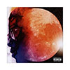
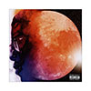

Kid Cudi has been my favorite artist for over 10 years, he puts so much creativity into all of his projects making him an all around talented musician and creative.
On this website I'll be introducing you to all of his albums and ranking my favorite albums.
You can learn more about Kid Cudi's background and artist journey here
| Album Name | # of Songs | Release Date |
|---|---|---|
| Man On The Moon: End of Day | 18 | Jan 1, 2009 |
| Man On The Moon II | 17 | Nov 9, 2010 |
| Indicud | 18 | April 12, 2013 |
| Satellite Flight | 10 | Feb 25, 2014 |
| Speedin' Bullet 2 Heaven | 26 | Dec 4, 2015 |
| Passion, Pain & Demon Slayin' | 19 | Dec 16, 2016 |
| Man On The Moon III | 18 | Dec 11, 2020 |
| Entergalactic | 15 | Sept 30, 2022 |
 
